RISC-V · 360 MHz
Two cores.
One adventure.
The heart of Tab5. Our firmware runs at 360 MHz; the chip also includes a PPA 2D graphics accelerator and a MIPI-DSI display interface.
TEST VERSION 0.3 · STEP BY STEP
Choose from 9 free games and 4 using your own GOG packages. Verify files locally and add them over USB. Start with Sołtys in Polish if you like.
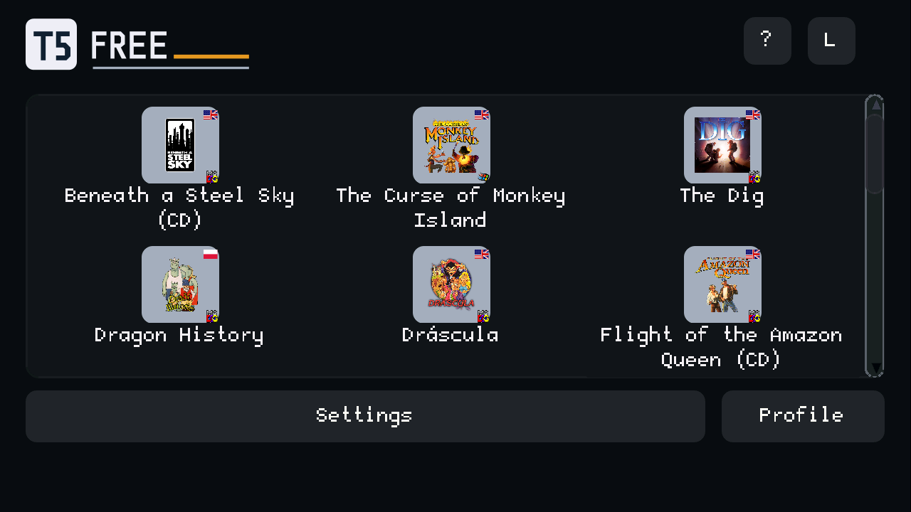
From cyberpunk to Polish comedy. Classic point-and-click adventures: explore, talk and solve puzzles.
| Game | Style | Language | Approximate playtime | Source |
|---|
The total refers to the original games on other platforms. These are indicative player and reviewer reports, not measured full playthroughs on Tab5. Different play styles and port slowdowns are not added together. Missing data does not mean zero hours.
300+ locations across BASS, Amazon Queen, Lure and Dragon History, according to publishers and the author. This describes game content, not the number of locations tested on Tab5.
MEET THE HARDWARE · M5STACK TAB5
Five inches for your adventures. Inside, an ESP32-P4 dual-core microcontroller runs our classic ScummVM games.
Paid partnership. Links to the M5Stack shop are affiliate links. When you buy through the link to the M5Stack shop, the shop pays me a commission.
RISC-V · 360 MHz
The heart of Tab5. Our firmware runs at 360 MHz; the chip also includes a PPA 2D graphics accelerator and a MIPI-DSI display interface.
IPS touchscreen · 1280 × 720 pixels
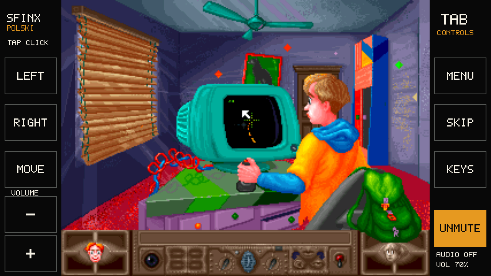
32 MB PSRAM + 16 MB Flash
Games and saves on microSD. Install over USB-C.
Speaker and 3.5 mm audio jack. In-game volume and mute, right on the sidebar.
Tab5 also has Wi-Fi 6 via a separate ESP32-C6, a 2 MP camera and expansion connectors. These are hardware features for other projects; this adventure firmware runs locally and uses neither Wi-Fi nor the camera.
PLN 289 incl. VAT for C145 without a battery. Botland offer checked 23 September 2026; price may change and excludes shipping. A microSD card and USB-C data cable are also needed. The NP-F550 battery is optional.
FIRST-RUN INSTALLER
You need Tab5 with a FAT32 microSD, a USB-C data cable, and desktop Chrome or Edge. Choose at least one game package.
Adding games to an older installation? Install firmware 0.3 before selecting new titles. Games and saves remain on microSD.
Connect Tab5 without a hub. The button opens the standard ESP browser flasher. Data on microSD stays untouched.
Select USB JTAG/serial debug unit in the browser dialog, then Connect. First install firmware (step 1), then connect the game installer separately (step 3). Close the first installer dialog when it finishes.
Empty list? Use a data-capable cable and try another USB-C port. Close any serial monitor or other tab using Tab5, then unplug and reconnect. You can cancel the port picker and return later.
Keep an image of your existing firmware before the first install. This installer does not format the card, but it replaces the program in Tab5 flash memory.
Choose at least one game. Free ZIPs come from the linked sources; BASS and Amazon Queen have free GOG packages. Four paid games require your own GOG package. Do not run or unpack downloaded files.
For Dráscula, download both ZIPs: the game and this MP3 pack. Leave them unopened. Adding music alone requires the game already on the card.
Each requires access to your own GOG offline edition. Select only the game you want to add. Large packages, especially The Dig and Curse, may take tens of minutes over USB.
Packages stay on your computer. Verification sends neither games nor account data to our server.
Save your current game: connecting the installer restarts Tab5. The card is not formatted. New games are added; saves and profiles remain. Installed files are verified and unchanged ones skipped. Large packages may take tens of minutes over USB.
Keep USB power connected if you have no battery. Tap a cover, then ▶. Saves go to microSD. MENU opens Save/Load; SKIP advances skippable intros. Only installed games appear in the launcher.
TAB5 · SCUMMVM
Tap a cover, then ▶. The game keeps its proportions; large controls and audio buttons sit on either side.
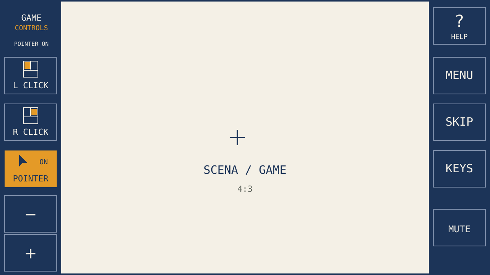
Tap the scene to walk or select an object. This acts as the left mouse button.
The lower − / + buttons on the left adjust device volume. MUTE / UNMUTE on the right toggles sound. While muted, “+” changes the level without enabling audio. Settings are saved.
Settings → GUI → Theme: Tab5 Light, Tab5 Dark or Tab5 Black. Settings → Tab5 → Sidebars: Dark blue, Light, Black or Follow menu skin. You can pair a dark menu with light controls.
Save after a cutscene or dialogue ends: MENU → Save → an empty slot → Save. The default name is fine. Nippon: KEYS → s → ✓. Wait until gameplay resumes before unplugging.
BASS: to use an object, turn POINTER on, point to it, then tap R CLICK. The inventory appears at the top of the game scene.
Amazon Queen: choose an action in the game’s bottom panel, then an object or character. SKIP advances through skippable intro scenes.
Curse of Monkey Island: select Talk with KEYS → t → ✓. Holding the scene displays the verb coin; gesture selection is still being tested.
Walk close to an object, then use POINTER → object → R CLICK. The Polish distance warning means the hero is too far away.
Enable POINTER. Point at WALK at the top → L CLICK, then a destination → L CLICK. Use the same sequence for LOOK, TAKE and TALK to avoid selecting the wrong action.
Choose JAPANESE / ENGLISH, the closed new-game book, then R CLICK. For Dino, choose NE, RI, HO, WA, I, KI (tiles6,4,7,2,5,8 from bottom-left). Tap text to advance the opening dialogue.
Nippon saves via KEYS → s → green ✓, then an empty slot. In-game load: KEYS → l → ✓. After restart, choose EN and the open SAVED GAME book; generic MENU → Save and the launcher Load shortcut are not supported here.
FROM THE DEVICE
Actual LCD captures from game tests, with light and black sidebars. Open an image at full resolution. These first scenes do not certify complete playthroughs.
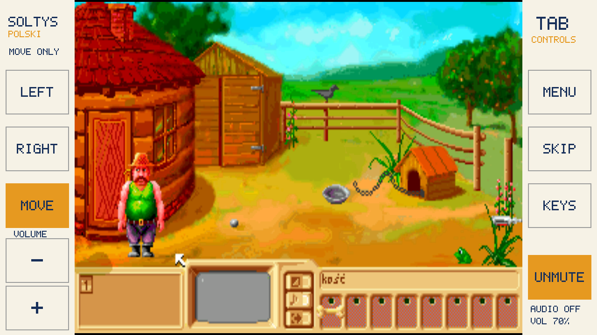
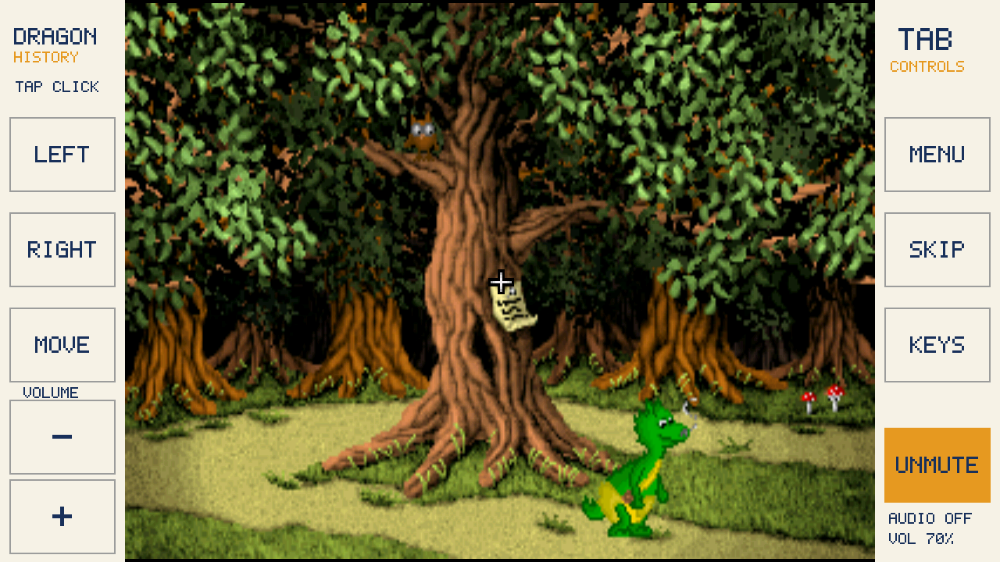
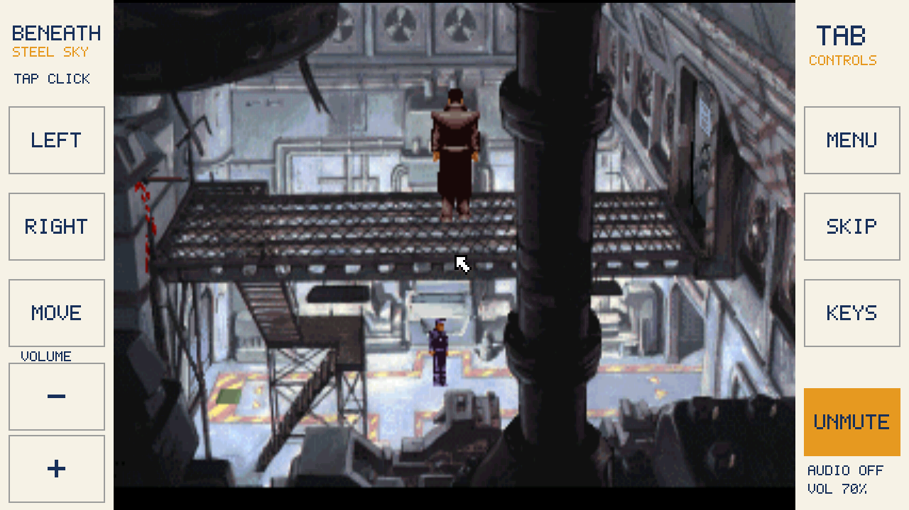
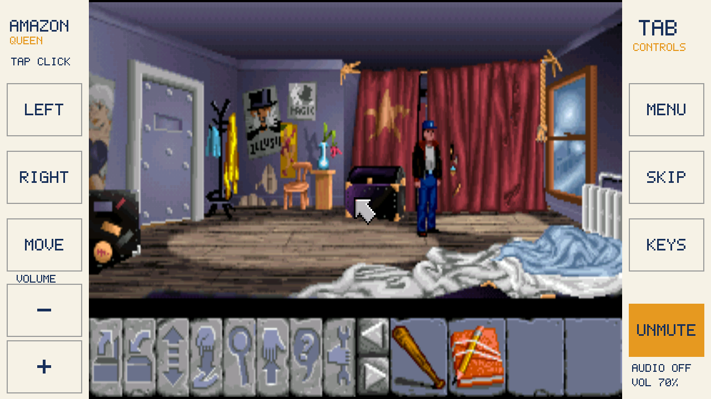
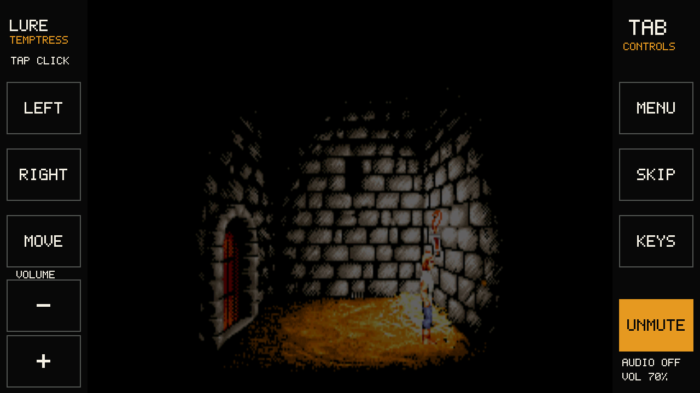
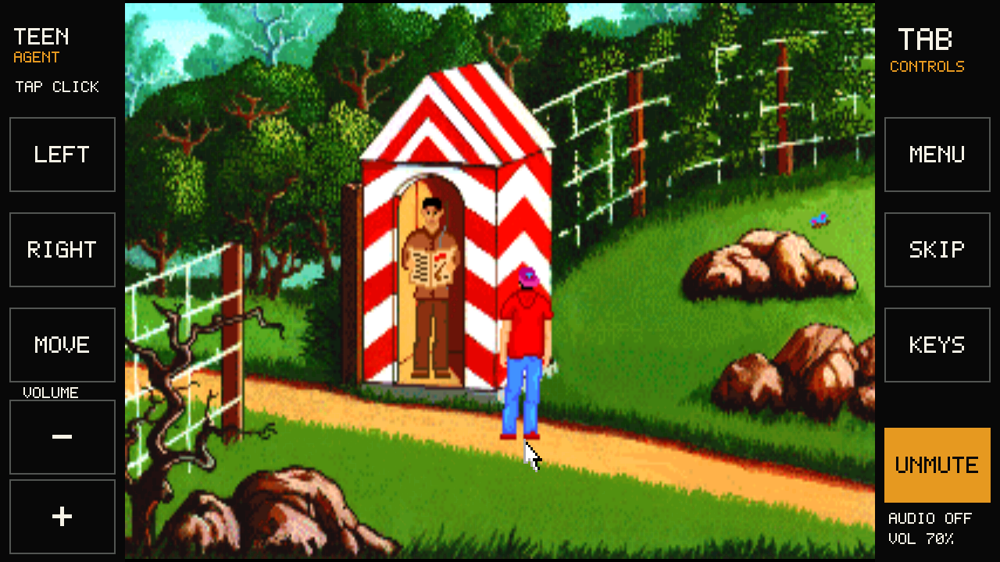
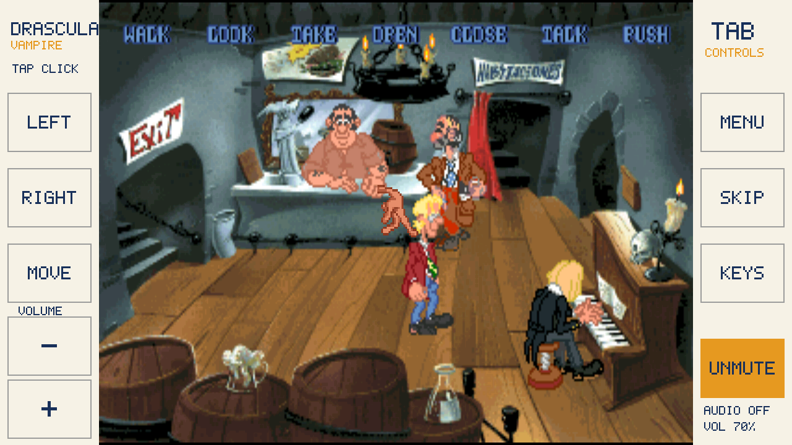
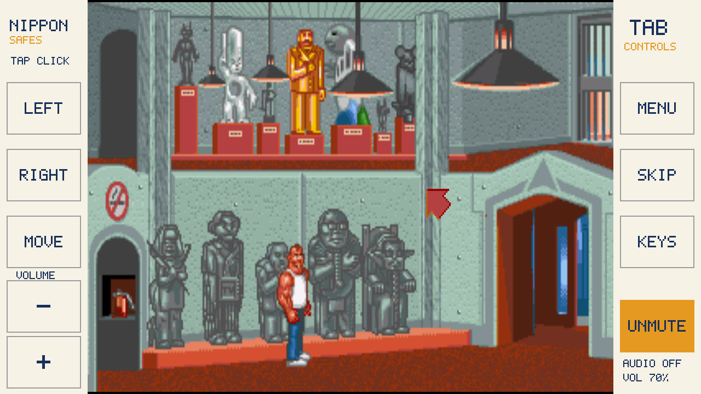
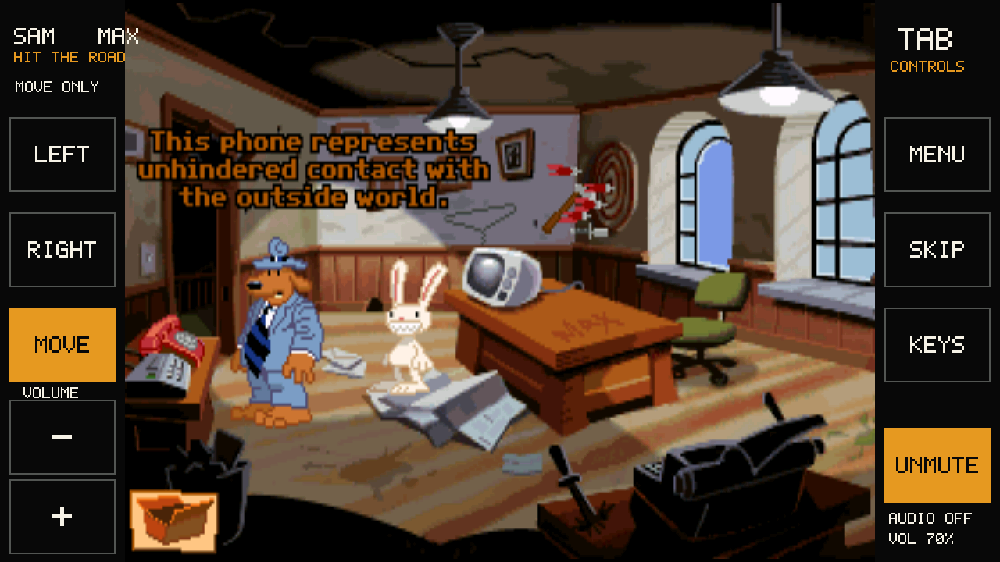
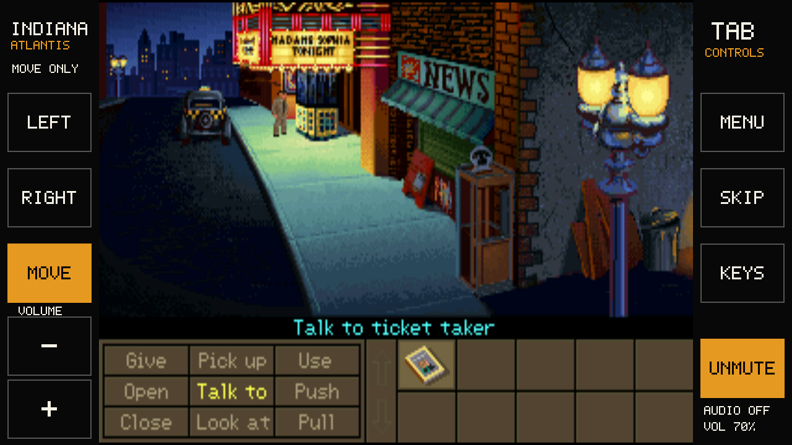
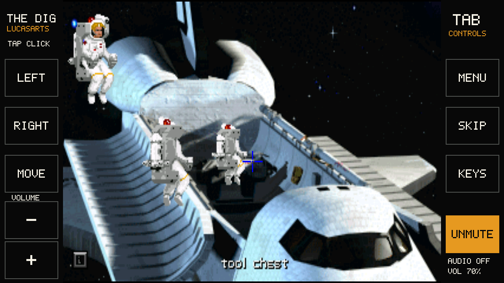
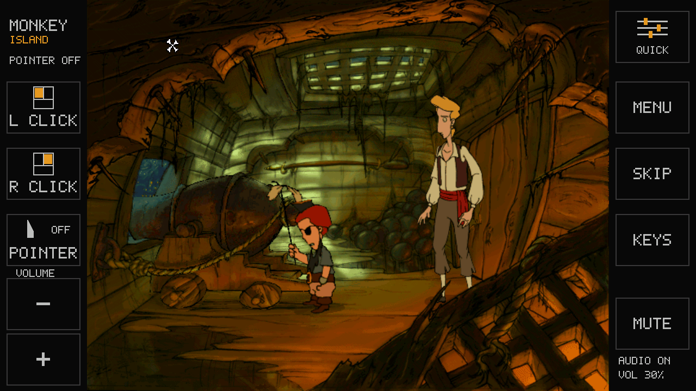
We worked on Mandy Christmas Adventure, including its Polish version. On Tab5 we reached the first room and tested saving and loading, but opening the menu after loading still ran out of memory. Mandy is therefore excluded from this release. We have kept the results from 22 September 2026 for future work; the game is not included in the collection totals or available in the installer.
The Griffon Legend, God of Thunder and Broken Sword 2.5 may follow this release if the community is interested. They need separate input and resource tests and are not part of the current package.
WHAT THE INSTALLER PROVES
The full package SHA-256 must match one of the exact listed ZIP or GOG releases.
Every required game file has its own size and SHA-256.
Tab5 hashes every file again before publishing it.
We verify a specific release, not GOG account identity or ownership. ZIP and PKG files are processed locally; we never ask for your password or upload game data to our server.
Tested13 games reached first scenes on one Tab5 P4 rev. 1.3 / ST7123 with 32 GB FAT32. Movement, selected actions, saving, USB reset and loading were tested with game-specific scope. This is not a full playthrough.
Test limitsFull playthroughs, listening tests and extended finger play are not complete. Curse: Talk works via KEYS → t → ✓; selecting from the verb coin by gesture is unmeasured. Nippon saves via KEYS → s → ✓.
Scope9 free games and 4 from your GOG packages, in the exact listed editions. Sołtys, Sfinx and Dragon History are in Polish. Kyrandia and Mandy are excluded.